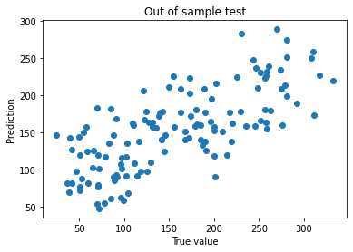

from sklearn.datasets import load_diabetes
data = load_diabetes()
X = data['data']
Y = data['target']Intro to sklearn
Objectives:
- train a model with sklearn
- perform a validation test
Diabetes dataset
Import the diabetes dataset from sklearn. Describe it.
print(data['DESCR']).. _diabetes_dataset:
Diabetes dataset
----------------
Ten baseline variables, age, sex, body mass index, average blood
pressure, and six blood serum measurements were obtained for each of n =
442 diabetes patients, as well as the response of interest, a
quantitative measure of disease progression one year after baseline.
**Data Set Characteristics:**
:Number of Instances: 442
:Number of Attributes: First 10 columns are numeric predictive values
:Target: Column 11 is a quantitative measure of disease progression one year after baseline
:Attribute Information:
- age age in years
- sex
- bmi body mass index
- bp average blood pressure
- s1 tc, T-Cells (a type of white blood cells)
- s2 ldl, low-density lipoproteins
- s3 hdl, high-density lipoproteins
- s4 tch, thyroid stimulating hormone
- s5 ltg, lamotrigine
- s6 glu, blood sugar level
Note: Each of these 10 feature variables have been mean centered and scaled by the standard deviation times `n_samples` (i.e. the sum of squares of each column totals 1).
Source URL:
https://www4.stat.ncsu.edu/~boos/var.select/diabetes.html
For more information see:
Bradley Efron, Trevor Hastie, Iain Johnstone and Robert Tibshirani (2004) "Least Angle Regression," Annals of Statistics (with discussion), 407-499.
(https://web.stanford.edu/~hastie/Papers/LARS/LeastAngle_2002.pdf)Split the dataset into a training set (70%) and a test set (30%)
from sklearn.model_selection import train_test_split
X_train, X_test, Y_train, Y_test = train_test_split(X,Y, test_size=0.3)X_train.shape(309, 10)X_test.shape(133, 10)133/(133+309)0.3009049773755656Features are already “centered and scaled”: no need to renormalize them
Train a linear model (with intercept) on the training set
from sklearn.linear_model import LinearRegression
model = LinearRegression()
# by default there is an intercept (check the doc: default value for fit_intercept is True)LinearRegression?Init signature: LinearRegression( *, fit_intercept=True, normalize=False, copy_X=True, n_jobs=None, positive=False, ) Docstring: Ordinary least squares Linear Regression. LinearRegression fits a linear model with coefficients w = (w1, ..., wp) to minimize the residual sum of squares between the observed targets in the dataset, and the targets predicted by the linear approximation. Parameters ---------- fit_intercept : bool, default=True Whether to calculate the intercept for this model. If set to False, no intercept will be used in calculations (i.e. data is expected to be centered). normalize : bool, default=False This parameter is ignored when ``fit_intercept`` is set to False. If True, the regressors X will be normalized before regression by subtracting the mean and dividing by the l2-norm. If you wish to standardize, please use :class:`~sklearn.preprocessing.StandardScaler` before calling ``fit`` on an estimator with ``normalize=False``. copy_X : bool, default=True If True, X will be copied; else, it may be overwritten. n_jobs : int, default=None The number of jobs to use for the computation. This will only provide speedup for n_targets > 1 and sufficient large problems. ``None`` means 1 unless in a :obj:`joblib.parallel_backend` context. ``-1`` means using all processors. See :term:`Glossary <n_jobs>` for more details. positive : bool, default=False When set to ``True``, forces the coefficients to be positive. This option is only supported for dense arrays. .. versionadded:: 0.24 Attributes ---------- coef_ : array of shape (n_features, ) or (n_targets, n_features) Estimated coefficients for the linear regression problem. If multiple targets are passed during the fit (y 2D), this is a 2D array of shape (n_targets, n_features), while if only one target is passed, this is a 1D array of length n_features. rank_ : int Rank of matrix `X`. Only available when `X` is dense. singular_ : array of shape (min(X, y),) Singular values of `X`. Only available when `X` is dense. intercept_ : float or array of shape (n_targets,) Independent term in the linear model. Set to 0.0 if `fit_intercept = False`. See Also -------- Ridge : Ridge regression addresses some of the problems of Ordinary Least Squares by imposing a penalty on the size of the coefficients with l2 regularization. Lasso : The Lasso is a linear model that estimates sparse coefficients with l1 regularization. ElasticNet : Elastic-Net is a linear regression model trained with both l1 and l2 -norm regularization of the coefficients. Notes ----- From the implementation point of view, this is just plain Ordinary Least Squares (scipy.linalg.lstsq) or Non Negative Least Squares (scipy.optimize.nnls) wrapped as a predictor object. Examples -------- >>> import numpy as np >>> from sklearn.linear_model import LinearRegression >>> X = np.array([[1, 1], [1, 2], [2, 2], [2, 3]]) >>> # y = 1 * x_0 + 2 * x_1 + 3 >>> y = np.dot(X, np.array([1, 2])) + 3 >>> reg = LinearRegression().fit(X, y) >>> reg.score(X, y) 1.0 >>> reg.coef_ array([1., 2.]) >>> reg.intercept_ 3.0000... >>> reg.predict(np.array([[3, 5]])) array([16.]) File: ~/.local/opt/miniconda/lib/python3.8/site-packages/sklearn/linear_model/_base.py Type: ABCMeta Subclasses:
model.fit(X_train, Y_train)LinearRegression()model.fit?Signature: model.fit(X, y, sample_weight=None) Docstring: Fit linear model. Parameters ---------- X : {array-like, sparse matrix} of shape (n_samples, n_features) Training data y : array-like of shape (n_samples,) or (n_samples, n_targets) Target values. Will be cast to X's dtype if necessary sample_weight : array-like of shape (n_samples,), default=None Individual weights for each sample .. versionadded:: 0.17 parameter *sample_weight* support to LinearRegression. Returns ------- self : returns an instance of self. File: ~/.local/opt/miniconda/lib/python3.8/site-packages/sklearn/linear_model/_base.py Type: method
Compute the fitting score on the test set. (Bonus: compare with your own computation of \(R^2\))
pred = model.predict(X_test)Y_testarray([190., 225., 141., 281., 168., 42., 116., 276., 281., 51., 121.,
156., 163., 142., 187., 173., 39., 229., 155., 332., 257., 261.,
42., 201., 103., 47., 142., 172., 71., 96., 173., 127., 150.,
230., 185., 209., 37., 92., 235., 131., 97., 40., 279., 97.,
245., 258., 102., 168., 51., 248., 88., 91., 58., 110., 308.,
88., 60., 311., 246., 310., 214., 200., 220., 131., 72., 72.,
181., 89., 163., 104., 96., 70., 217., 55., 317., 259., 50.,
118., 200., 25., 124., 129., 179., 109., 71., 102., 252., 189.,
190., 263., 174., 259., 111., 85., 145., 85., 252., 258., 274.,
83., 140., 196., 219., 200., 197., 51., 66., 79., 275., 78.,
257., 180., 202., 71., 122., 136., 270., 70., 146., 281., 114.,
59., 191., 91., 65., 143., 185., 243., 53., 99., 125., 139.,
292.])from matplotlib import pyplot as pltplt.plot(Y_test, pred,'o')
plt.xlabel("True value")
plt.ylabel("Prediction")
plt.title("Out of sample test")Text(0.5, 1.0, 'Out of sample test')
model.score(X_test, Y_test)0.5249868646449161model.score?Signature: model.score(X, y, sample_weight=None) Docstring: Return the coefficient of determination :math:`R^2` of the prediction. The coefficient :math:`R^2` is defined as :math:`(1 - \frac{u}{v})`, where :math:`u` is the residual sum of squares ``((y_true - y_pred) ** 2).sum()`` and :math:`v` is the total sum of squares ``((y_true - y_true.mean()) ** 2).sum()``. The best possible score is 1.0 and it can be negative (because the model can be arbitrarily worse). A constant model that always predicts the expected value of `y`, disregarding the input features, would get a :math:`R^2` score of 0.0. Parameters ---------- X : array-like of shape (n_samples, n_features) Test samples. For some estimators this may be a precomputed kernel matrix or a list of generic objects instead with shape ``(n_samples, n_samples_fitted)``, where ``n_samples_fitted`` is the number of samples used in the fitting for the estimator. y : array-like of shape (n_samples,) or (n_samples, n_outputs) True values for `X`. sample_weight : array-like of shape (n_samples,), default=None Sample weights. Returns ------- score : float :math:`R^2` of ``self.predict(X)`` wrt. `y`. Notes ----- The :math:`R^2` score used when calling ``score`` on a regressor uses ``multioutput='uniform_average'`` from version 0.23 to keep consistent with default value of :func:`~sklearn.metrics.r2_score`. This influences the ``score`` method of all the multioutput regressors (except for :class:`~sklearn.multioutput.MultiOutputRegressor`). File: ~/.local/opt/miniconda/lib/python3.8/site-packages/sklearn/base.py Type: method
Should we adjust the size of the test set? What would be the problem?
for values in [0.05, 0.1, 0.2, 0.3, 0.4, 0.5, 0.6, 0.7]:
X_train, X_test, Y_train, Y_test = train_test_split(X,Y, test_size=values)
model = LinearRegression()
model.fit(X_train, Y_train)
score = model.score(X_test, Y_test)
print(f"Test Set {values:.2f}% | Score: {score:.3f}")Test Set 0.05% | Score: 0.427
Test Set 0.10% | Score: 0.537
Test Set 0.20% | Score: 0.558
Test Set 0.30% | Score: 0.451
Test Set 0.40% | Score: 0.513
Test Set 0.50% | Score: 0.475
Test Set 0.60% | Score: 0.488
Test Set 0.70% | Score: 0.439There is a tradeoff between: - a big test set: score more accurate, but the fitting is less accurate (more bias) - a small test set: score more volatile, but the fitting is more accurate (more variance)
Implement \(k\)-fold model with \(k=3\).
scores = []
from sklearn.model_selection import KFold
kf = KFold(n_splits=3)
for train_index, test_index in kf.split(X):
X_train, X_test = X[train_index], X[test_index]
Y_train, Y_test = Y[train_index], Y[test_index]
print(X_train.shape)
model = LinearRegression()
model.fit(X_train, Y_train)
score = model.score(X_test, Y_test)
scores.append(score)
## train a model in X_train, y_train
## test it on X_test, y_test(294, 10)
(295, 10)
(295, 10)scores[0.4693057771290108, 0.48724993937707484, 0.5095525852352711]sum(scores)/30.4887027672471189Bonus: use statsmodels (or linearmodels) to estimate the same linear model on the full sample. Is it always a superior method?
data['feature_names']['age', 'sex', 'bmi', 'bp', 's1', 's2', 's3', 's4', 's5', 's6']import pandas
df = pandas.DataFrame(X, columns=data['feature_names'])
df['target'] = data['target']df| age | sex | bmi | bp | s1 | s2 | s3 | s4 | s5 | s6 | target | |
|---|---|---|---|---|---|---|---|---|---|---|---|
| 0 | 0.038076 | 0.050680 | 0.061696 | 0.021872 | -0.044223 | -0.034821 | -0.043401 | -0.002592 | 0.019908 | -0.017646 | 151.0 |
| 1 | -0.001882 | -0.044642 | -0.051474 | -0.026328 | -0.008449 | -0.019163 | 0.074412 | -0.039493 | -0.068330 | -0.092204 | 75.0 |
| 2 | 0.085299 | 0.050680 | 0.044451 | -0.005671 | -0.045599 | -0.034194 | -0.032356 | -0.002592 | 0.002864 | -0.025930 | 141.0 |
| 3 | -0.089063 | -0.044642 | -0.011595 | -0.036656 | 0.012191 | 0.024991 | -0.036038 | 0.034309 | 0.022692 | -0.009362 | 206.0 |
| 4 | 0.005383 | -0.044642 | -0.036385 | 0.021872 | 0.003935 | 0.015596 | 0.008142 | -0.002592 | -0.031991 | -0.046641 | 135.0 |
| ... | ... | ... | ... | ... | ... | ... | ... | ... | ... | ... | ... |
| 437 | 0.041708 | 0.050680 | 0.019662 | 0.059744 | -0.005697 | -0.002566 | -0.028674 | -0.002592 | 0.031193 | 0.007207 | 178.0 |
| 438 | -0.005515 | 0.050680 | -0.015906 | -0.067642 | 0.049341 | 0.079165 | -0.028674 | 0.034309 | -0.018118 | 0.044485 | 104.0 |
| 439 | 0.041708 | 0.050680 | -0.015906 | 0.017282 | -0.037344 | -0.013840 | -0.024993 | -0.011080 | -0.046879 | 0.015491 | 132.0 |
| 440 | -0.045472 | -0.044642 | 0.039062 | 0.001215 | 0.016318 | 0.015283 | -0.028674 | 0.026560 | 0.044528 | -0.025930 | 220.0 |
| 441 | -0.045472 | -0.044642 | -0.073030 | -0.081414 | 0.083740 | 0.027809 | 0.173816 | -0.039493 | -0.004220 | 0.003064 | 57.0 |
442 rows × 11 columns
from statsmodels.formula import apiols_model = api.ols('target ~ age + sex + bmi + bp + s1 + s2 + s3 + s4 + s5 + s6', df)result = ols_model.fit()result.summary()| Dep. Variable: | target | R-squared: | 0.518 |
|---|---|---|---|
| Model: | OLS | Adj. R-squared: | 0.507 |
| Method: | Least Squares | F-statistic: | 46.27 |
| Date: | Wed, 16 Mar 2022 | Prob (F-statistic): | 3.83e-62 |
| Time: | 11:59:29 | Log-Likelihood: | -2386.0 |
| No. Observations: | 442 | AIC: | 4794. |
| Df Residuals: | 431 | BIC: | 4839. |
| Df Model: | 10 | ||
| Covariance Type: | nonrobust |
| coef | std err | t | P>|t| | [0.025 | 0.975] | |
|---|---|---|---|---|---|---|
| Intercept | 152.1335 | 2.576 | 59.061 | 0.000 | 147.071 | 157.196 |
| age | -10.0122 | 59.749 | -0.168 | 0.867 | -127.448 | 107.424 |
| sex | -239.8191 | 61.222 | -3.917 | 0.000 | -360.151 | -119.488 |
| bmi | 519.8398 | 66.534 | 7.813 | 0.000 | 389.069 | 650.610 |
| bp | 324.3904 | 65.422 | 4.958 | 0.000 | 195.805 | 452.976 |
| s1 | -792.1842 | 416.684 | -1.901 | 0.058 | -1611.169 | 26.801 |
| s2 | 476.7458 | 339.035 | 1.406 | 0.160 | -189.621 | 1143.113 |
| s3 | 101.0446 | 212.533 | 0.475 | 0.635 | -316.685 | 518.774 |
| s4 | 177.0642 | 161.476 | 1.097 | 0.273 | -140.313 | 494.442 |
| s5 | 751.2793 | 171.902 | 4.370 | 0.000 | 413.409 | 1089.150 |
| s6 | 67.6254 | 65.984 | 1.025 | 0.306 | -62.065 | 197.316 |
| Omnibus: | 1.506 | Durbin-Watson: | 2.029 |
|---|---|---|---|
| Prob(Omnibus): | 0.471 | Jarque-Bera (JB): | 1.404 |
| Skew: | 0.017 | Prob(JB): | 0.496 |
| Kurtosis: | 2.726 | Cond. No. | 227. |
Notes:
[1] Standard Errors assume that the covariance matrix of the errors is correctly specified.
Sparse regressions on the Boston House Price Dataset
Import the Boston House Price Dataset from sklearn. Describe it. Compute correlations.
Split the dataset into a training set (70%) and a test set (30%).
Train a lasso model to predict house prices. Compute the score on the test set.
Train a ridge model to predict house prices. Which one is better?
(bonus) Use statsmodels to build a model predicting house prices. What is the problem?
Predicting Breast Cancer
Sklearn includes the Winsconsin breast cancer database. It associates medical outcomes for tumor observation, with several characteristics. Can a machine learn how to predict whether a cancer is benign or malignant ?
Import the Breast Cancer Dataset from sklearn. Describe it.
Properly train a linear logistic regression to predict cancer morbidity. (bonus: use k-fold validation)
Try with other classifiers. Which one is best?